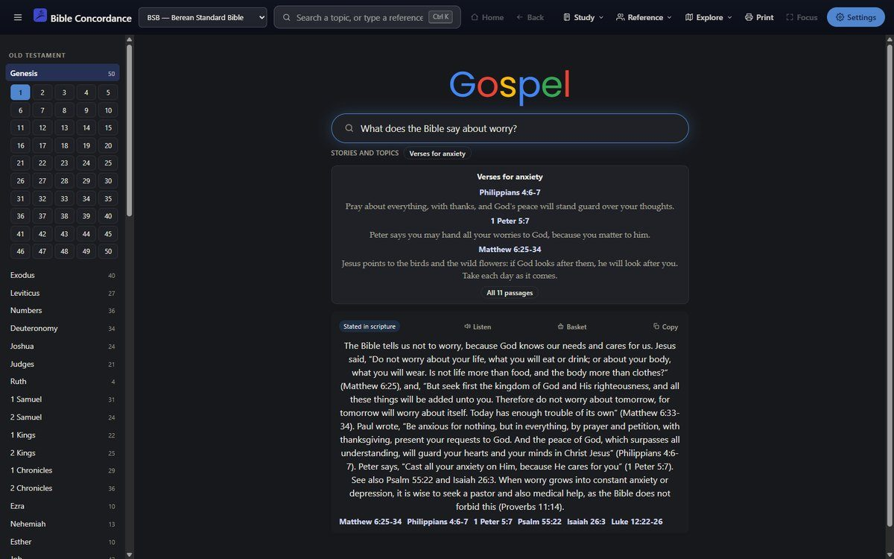
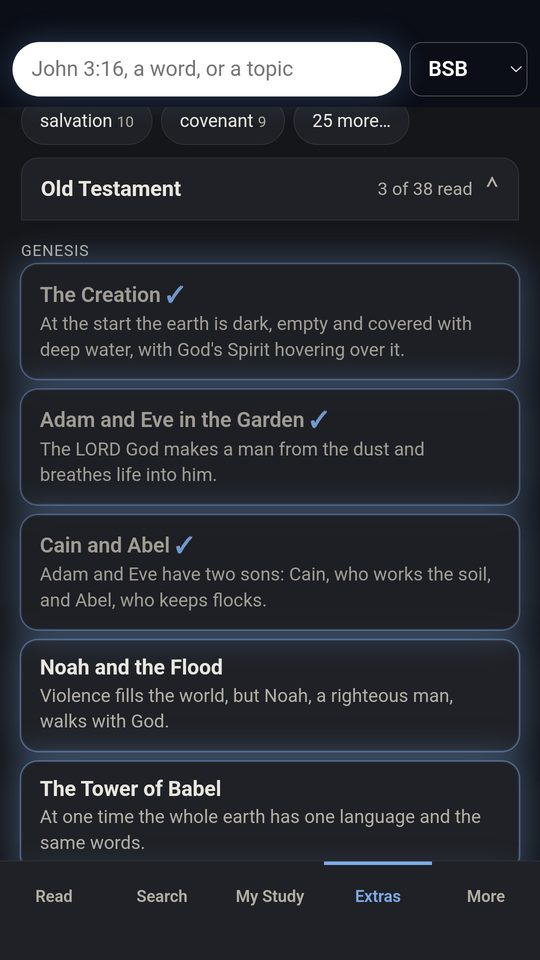

A free Bible app that works without the internet
Read, search and study the Bible with no signal. Free for Windows and Android, with no account, no adverts and nothing collected about you.
What you get
- Five Bibles built in: BSB, KJV, ASV, WEB and YLT, with the words of Jesus in red. They work with no internet from the first minute.
- More than a thousand Bibles to download, free, in hundreds of languages, from eBible.org and CrossWire's libraries. After the download they read offline too.
- Search for a word, a phrase, a reference such as John 3:16, or a question in your own words. The answer quotes the Bible first.
- Hebrew and Greek: tap a word to see the original word behind it, its Strong's number and every verse that uses it.
- Commentaries, dictionaries and books to download, and notes, highlights and bookmarks of your own.
- Bible stories with paintings, pages for children to print and colour, Bible maps, and verses for hard days.


Windows and Android
The Windows app is the full study app for a desk: seven commentaries, the interlinear, a concordance, a sermon builder and slides. The Android app is a pocket companion: the Bible, word study, Bible stories, a Daily Scroll, a prayer list, memory verses and Listen, which reads aloud with the screen off. Use either, or both: at home on your Wi-Fi they keep your bookmarks, highlights and notes the same.
Free, private, no strings
Bible Concordance is free and will stay free. There is no account to make, no adverts and no tracking. Your notes, highlights and prayers stay on your own device. The app goes online only when you choose to download something.
Questions
Is it really free?
Does it work without the internet?
Which Bibles can I read?
Is there a version for iPhone or Mac?
What does it collect about me?
Try it, it is free
No account, no adverts, and it works without the internet.
Download for Windows or Android